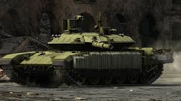

Avantages Puissance de canon élevée : obus explosifs très létaux à bas/moyen BR, bons APFSDS à haut tiers. Silhouette basse → facile à cacher. Blindage incliné très efficace sur T-44, T-55, T-72. Bonnes accélérations sur beaucoup de MBT. Désavantages Dépression de canon très mauvaise (-5° typiquement). Temps de rechargement souvent long (pas d'autoloader sur certains → 8–10 s, autoloader fixe de 7 s). Mauvaises marches arrières sur beaucoup de chars. Optiques parfois inférieures aux occidentaux.
On notera que la communauté considère la pluspart des véhicules soviétique comme ayant été bénis par les développeurs du jeu, ce phénomène est connu par l'appelation suivante : "Russian Bias" qui se traduit grossièrement en Biais Russe, car en effet, les dévs sont tous d'origine russe.